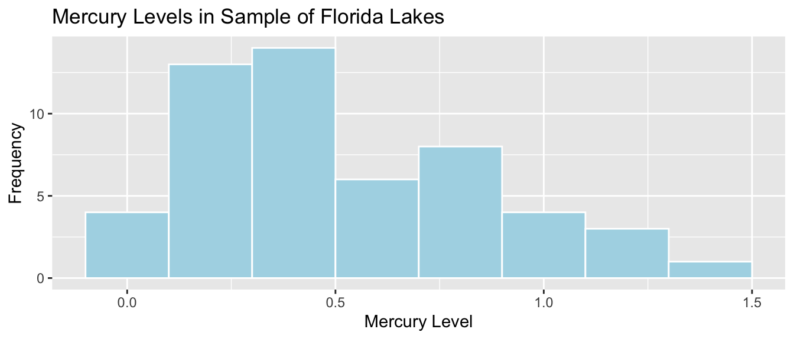
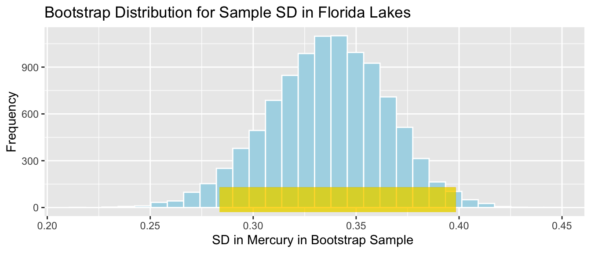

Chapter 3 Hypothesis Testing via Permutation
Learning Outcomes:
- State null and alternative hypotheses associated with models involving categorical and quantitative explanatory variables.
- Explain how to use permutation tests for hypotheses involving means, medians, F-statistics, slopes, and other regression coefficients, as well as functions of these statistics.
- Interpret p-values in context.
- Explain the conclusions we should draw from from a hypothesis test, while accounting for other information available in a dataset.
- Explain how to simultaneously test for differences between multiple groups.
- Distinguish between statistical significance and practical importance.
3.1 Test for Difference in Means
3.1.1 Mercury Levels in Florida Lakes
A 2004 study by Lange, T., Royals, H. and Connor, L. examined Mercury accumulation in large-mouth bass, taken from a sample of 53 Florida Lakes. If Mercury accumulation exceeds 0.5 ppm, then there are environmental concerns. In fact, the legal safety limit in Canada is 0.5 ppm, although it is 1 ppm in the United States.

3.1.2 Florida Lakes Dataset
## Rows: 53
## Columns: 12
## $ ID <int> 1, 2, 3, 4, 5, 6, 7, 8, 9, 10, 11, 12, 13, 14, 15, 1…
## $ Lake <chr> "Alligator", "Annie", "Apopka", "Blue Cypress", "Bri…
## $ Alkalinity <dbl> 5.9, 3.5, 116.0, 39.4, 2.5, 19.6, 5.2, 71.4, 26.4, 4…
## $ pH <dbl> 6.1, 5.1, 9.1, 6.9, 4.6, 7.3, 5.4, 8.1, 5.8, 6.4, 5.…
## $ Calcium <dbl> 3.0, 1.9, 44.1, 16.4, 2.9, 4.5, 2.8, 55.2, 9.2, 4.6,…
## $ Chlorophyll <dbl> 0.7, 3.2, 128.3, 3.5, 1.8, 44.1, 3.4, 33.7, 1.6, 22.…
## $ AvgMercury <dbl> 1.23, 1.33, 0.04, 0.44, 1.20, 0.27, 0.48, 0.19, 0.83…
## $ NumSamples <int> 5, 7, 6, 12, 12, 14, 10, 12, 24, 12, 12, 12, 7, 43, …
## $ MinMercury <dbl> 0.85, 0.92, 0.04, 0.13, 0.69, 0.04, 0.30, 0.08, 0.26…
## $ MaxMercury <dbl> 1.43, 1.90, 0.06, 0.84, 1.50, 0.48, 0.72, 0.38, 1.40…
## $ ThreeYrStdMercury <dbl> 1.53, 1.33, 0.04, 0.44, 1.33, 0.25, 0.45, 0.16, 0.72…
## $ AgeData <int> 1, 0, 0, 0, 1, 1, 1, 1, 1, 1, 1, 1, 1, 1, 0, 1, 1, 1…We are interested in whether mercury levels are higher or lower, on average, in Northern Florida compared to Southern Florida.
We’ll divide the state along route 50, which runs East-West, passing through Northern Orlando.

Figure 3.2: from Google Maps
We add a variable indicating whether each lake lies in the northern or southern part of the state.
library(Lock5Data)
data(FloridaLakes)
#Location relative to rt. 50
FloridaLakes$Location <- as.factor(c("S","S","N","S","S","N","N","N","N","N","N","S","N","S","N","N","N","N","S","S","N","S","N","S","N","S","N","S","N","N","N","N","N","N","S","N","N","S","S","N","N","N","N","S","N","S","S","S","S","N","N","N","N"))
print.data.frame(data.frame(FloridaLakes%>% select(Lake, Location, AvgMercury)), row.names = FALSE)## Lake Location AvgMercury
## Alligator S 1.23
## Annie S 1.33
## Apopka N 0.04
## Blue Cypress S 0.44
## Brick S 1.20
## Bryant N 0.27
## Cherry N 0.48
## Crescent N 0.19
## Deer Point N 0.83
## Dias N 0.81
## Dorr N 0.71
## Down S 0.50
## Eaton N 0.49
## East Tohopekaliga S 1.16
## Farm-13 N 0.05
## George N 0.15
## Griffin N 0.19
## Harney N 0.77
## Hart S 1.08
## Hatchineha S 0.98
## Iamonia N 0.63
## Istokpoga S 0.56
## Jackson N 0.41
## Josephine S 0.73
## Kingsley N 0.34
## Kissimmee S 0.59
## Lochloosa N 0.34
## Louisa S 0.84
## Miccasukee N 0.50
## Minneola N 0.34
## Monroe N 0.28
## Newmans N 0.34
## Ocean Pond N 0.87
## Ocheese Pond N 0.56
## Okeechobee S 0.17
## Orange N 0.18
## Panasoffkee N 0.19
## Parker S 0.04
## Placid S 0.49
## Puzzle N 1.10
## Rodman N 0.16
## Rousseau N 0.10
## Sampson N 0.48
## Shipp S 0.21
## Talquin N 0.86
## Tarpon S 0.52
## Tohopekaliga S 0.65
## Trafford S 0.27
## Trout S 0.94
## Tsala Apopka N 0.40
## Weir N 0.43
## Wildcat N 0.25
## Yale N 0.273.1.3 Comparing Northern and Southern Lakes
We are interested in investigating whether average mercury levels are higher in either Northern Florida or Southern Florida than the other.
LakesBP <- ggplot(data=FloridaLakes, aes(x=Location, y=AvgMercury, fill=Location)) +
geom_boxplot() + geom_jitter() + ggtitle("Mercury Levels in Florida Lakes") +
xlab("Location") + ylab("Mercury Level") + theme(axis.text.x = element_text(angle = 90)) + ylim(c(0, 1.5)) + coord_flip()
LakesBP
LakesTable <- FloridaLakes %>% group_by(Location) %>% summarize(MeanHg=mean(AvgMercury), StDevHg=sd(AvgMercury), N=n())
kable(LakesTable)| Location | MeanHg | StDevHg | N |
|---|---|---|---|
| N | 0.4245455 | 0.2696652 | 33 |
| S | 0.6965000 | 0.3838760 | 20 |
3.1.4 Model for Northern and Southern Lakes
\(\widehat{\text{Hg}} = b_0 +b_1\text{I}_{\text{South}}\)
- \(b_0\) represents the mean mercury level for lakes in North Florida, and
- \(b_1\) represents the mean difference in mercury level for lakes in South Florida, compared to North Florida
3.1.5 Model for Lakes R Output
##
## Call:
## lm(formula = AvgMercury ~ Location, data = FloridaLakes)
##
## Residuals:
## Min 1Q Median 3Q Max
## -0.65650 -0.23455 -0.08455 0.24350 0.67545
##
## Coefficients:
## Estimate Std. Error t value Pr(>|t|)
## (Intercept) 0.42455 0.05519 7.692 0.000000000441 ***
## LocationS 0.27195 0.08985 3.027 0.00387 **
## ---
## Signif. codes: 0 '***' 0.001 '**' 0.01 '*' 0.05 '.' 0.1 ' ' 1
##
## Residual standard error: 0.3171 on 51 degrees of freedom
## Multiple R-squared: 0.1523, Adjusted R-squared: 0.1357
## F-statistic: 9.162 on 1 and 51 DF, p-value: 0.0038683.1.6 Interpreting Lakes Regression Output
\(\widehat{\text{Hg}} = 0.4245455 +0.2719545\text{I}_{\text{South}}\)
\(b_1 = 0.27915= 0.6965 - 0.4245\) is equal to the difference in mean mercury levels between Northern and Southern lakes. (We’ve already seen that for categorical variables, the least-squares estimate is the mean, so this makes sense.)
We can use \(b_1\) to assess the size of the difference in mean mercury concentration levels.
Since the lakes we observed are only a sample of all lakes, we cannot assume the difference in mercury concentrations is exactly 0.4245 for all Northern vs Southern Florida lakes.
3.1.7 Evidence of Difference?
- Do these results provide evidence that among all Florida lakes, the mean mercury level is higher in the South than in the North?
Possible Explanations:
1. There really is a difference in average mercury level between lakes in Northern and Southern Florida.
2. There really is no difference in average mercury levels between lakes in Northern and Southern Florida, and we just happened, by chance, to select more lakes with higher mercury concentrations in Southern Florida.
Question: Which of these explanations do you think is more reasonable?
3.1.8 Permutation Test
Key Question:
- How likely is it that we would have observed a difference in means (i.e. a value of \(b_1\)) as extreme as 0.6965-0.4245 = 0.27195 ppm, merely by chance, if there is really no relationship between location and mercury level?
We can answer the key question using a procedure known as a permutation test. In a permutation test, we randomly permute our data to simulate a situation where there is no relationship between our explanatory and response variable. We observe whether it is plausible to observe values of a statistic (in this case the difference in means) as extreme or more extreme than what we saw in the actual data.
We’ll simulate situations where there is no relationship between location and mercury level, and see how often we observe a difference in means (\(b_1\)) as extreme as 0.27195.
Procedure:
Randomly shuffle the locations of the lakes, so that any relationship between location and mercury level is due only to chance.
Calculate the difference in mean mercury levels (i.e. value of \(b_1\)) in “Northern†and “Southern†lakes, using the shuffled data.
Repeat steps 1 and 2 many (say 10,000) times, recording the difference in means (i.e. value of \(b_1\)) each time.
Analyze the distribution of mean differences, simulated under the assumption that there is no relationship between location and mercury level. Look whether the actual difference we observed is consistent with the simulation results.
3.1.9 Applet for Permutation Tests
An Art of Stat Web App performs the steps listed above.
Follow these steps to perform the simulation.
1. Open the app.
2. Under “Enter Data”, Choose “Provide Own”.
3. For “Response Variable”, type in “Mercury Concentration.”
4. For “Group 1 Label”, enter “North”, and for “Group 2 Label”, enter “South”.
5. Copy/paste the following values into the “Group 1 Data†box. These are the mercury concentrations in the lakes in North Florida.
NLakesHg <- as.data.frame(FloridaLakes %>% filter(Location=="N"))$AvgMercury
kable(NLakesHg, fill = getOption("width"))| x |
|---|
| 0.04 |
| 0.27 |
| 0.48 |
| 0.19 |
| 0.83 |
| 0.81 |
| 0.71 |
| 0.49 |
| 0.05 |
| 0.15 |
| 0.19 |
| 0.77 |
| 0.63 |
| 0.41 |
| 0.34 |
| 0.34 |
| 0.50 |
| 0.34 |
| 0.28 |
| 0.34 |
| 0.87 |
| 0.56 |
| 0.18 |
| 0.19 |
| 1.10 |
| 0.16 |
| 0.10 |
| 0.48 |
| 0.86 |
| 0.40 |
| 0.43 |
| 0.25 |
| 0.27 |
- Copy/paste the following values into the “Group 2 Data†box. These are the mercury concentrations in the lakes in North Florida.
NLakesHg <- as.data.frame(FloridaLakes %>% filter(Location=="S"))$AvgMercury
kable(NLakesHg, fill = getOption("width"))| x |
|---|
| 1.23 |
| 1.33 |
| 0.44 |
| 1.20 |
| 0.50 |
| 1.16 |
| 1.08 |
| 0.98 |
| 0.56 |
| 0.73 |
| 0.59 |
| 0.84 |
| 0.17 |
| 0.04 |
| 0.49 |
| 0.21 |
| 0.52 |
| 0.65 |
| 0.27 |
| 0.94 |
For the question: “Select how many permutations you want to generate:†Choose 1.
Click “Generate”
The app will randomly assign the lakes to groups, with sizes matching the original data, and calculate the mean for each group. Observe means in the “Permuted Sample†and the difference in means. Is the difference as extreme as we observed in the actual data?
STOP HERE UNTIL FURTHER INSTRUCTED.
- Now generate 5 more permutations. Did you get any differences in means as extreme as we observed in the original data? What does this tell us about the likelihood of observing a difference in means as extreme as 0.27 by chance?
STOP HERE UNTIL FURTHER INSTRUCTED.
- Now generate 10,000 permutations. How often do you get a difference as extreme as we observed in the original data? What does this tell us about the likelihood of observing a difference in means as extreme as 0.27 by chance?
3.1.10 Five Permutations in R
We’ll use R to perform permutation tests in the same manner as is done in the Art of Stat App.
First Permutation
Recall these groups were randomly assigned, so the only differences in averages are due to random chance.
ShuffledLakes <- FloridaLakes ## create copy of dataset
ShuffledLakes$Location <- ShuffledLakes$Location[sample(1:nrow(ShuffledLakes))] Shuffle1df <- data.frame(FloridaLakes$Lake, FloridaLakes$Location, FloridaLakes$AvgMercury, ShuffledLakes$Location)
names(Shuffle1df) <- c("Lake", "Location", "AvgMercury", "Shuffled Location")
kable(head(Shuffle1df))| Lake | Location | AvgMercury | Shuffled Location |
|---|---|---|---|
| Alligator | S | 1.23 | N |
| Annie | S | 1.33 | S |
| Apopka | N | 0.04 | S |
| Blue Cypress | S | 0.44 | N |
| Brick | S | 1.20 | N |
| Bryant | N | 0.27 | N |
LakesPerm <- ggplot(data=Shuffle1df, aes(x=`Shuffled Location`, y=AvgMercury, fill=`Shuffled Location`)) +
geom_boxplot() + geom_jitter() + ggtitle("Mercury Levels in Florida Lakes") +
xlab("Location") + ylab("Mercury Level") + theme(axis.text.x = element_text(angle = 90)) + ylim(c(0, 1.5)) + coord_flip()
LakesPerm
LakesPermTable <- Shuffle1df %>% group_by(`Shuffled Location`) %>% summarize(MeanHg=mean(AvgMercury), StDevHg=sd(AvgMercury), N=n())
kable(LakesPermTable)| Shuffled Location | MeanHg | StDevHg | N |
|---|---|---|---|
| N | 0.5460606 | 0.3552986 | 33 |
| S | 0.4960000 | 0.3225784 | 20 |
Second Permutation
ShuffledLakes <- FloridaLakes ## create copy of dataset
ShuffledLakes$Location <- ShuffledLakes$Location[sample(1:nrow(ShuffledLakes))]
kable(head(Shuffle1df))| Lake | Location | AvgMercury | Shuffled Location |
|---|---|---|---|
| Alligator | S | 1.23 | N |
| Annie | S | 1.33 | S |
| Apopka | N | 0.04 | S |
| Blue Cypress | S | 0.44 | N |
| Brick | S | 1.20 | N |
| Bryant | N | 0.27 | N |
Shuffle1df <- data.frame(FloridaLakes$Lake, FloridaLakes$Location, FloridaLakes$AvgMercury, ShuffledLakes$Location)
names(Shuffle1df) <- c("Lake", "Location", "AvgMercury", "Shuffled Location")LakesPerm <- ggplot(data=Shuffle1df, aes(x=`Shuffled Location`, y=AvgMercury, fill=`Shuffled Location`)) +
geom_boxplot() + geom_jitter() + ggtitle("Mercury Levels in Florida Lakes") +
xlab("Location") + ylab("Mercury Level") + theme(axis.text.x = element_text(angle = 90)) + ylim(c(0, 1.5)) + coord_flip()
LakesPermLakesPermTable <- Shuffle1df %>% group_by(`Shuffled Location`) %>% summarize(MeanHg=mean(AvgMercury), StDevHg=sd(AvgMercury), N=n())
kable(LakesPermTable)| Shuffled Location | MeanHg | StDevHg | N |
|---|---|---|---|
| N | 0.4839394 | 0.3316431 | 33 |
| S | 0.5985000 | 0.3527975 | 20 |
Third Permutation
ShuffledLakes <- FloridaLakes ## create copy of dataset
ShuffledLakes$Location <- ShuffledLakes$Location[sample(1:nrow(ShuffledLakes))]
kable(head(Shuffle1df))| Lake | Location | AvgMercury | Shuffled Location |
|---|---|---|---|
| Alligator | S | 1.23 | S |
| Annie | S | 1.33 | S |
| Apopka | N | 0.04 | N |
| Blue Cypress | S | 0.44 | S |
| Brick | S | 1.20 | N |
| Bryant | N | 0.27 | S |
Shuffle1df <- data.frame(FloridaLakes$Lake, FloridaLakes$Location, FloridaLakes$AvgMercury, ShuffledLakes$Location)
names(Shuffle1df) <- c("Lake", "Location", "AvgMercury", "Shuffled Location")LakesPerm <- ggplot(data=Shuffle1df, aes(x=`Shuffled Location`, y=AvgMercury, fill=`Shuffled Location`)) +
geom_boxplot() + geom_jitter() + ggtitle("Mercury Levels in Florida Lakes") +
xlab("Location") + ylab("Mercury Level") + theme(axis.text.x = element_text(angle = 90)) + ylim(c(0, 1.5)) + coord_flip()
LakesPerm
LakesPermTable <- Shuffle1df %>% group_by(`Shuffled Location`) %>% summarize(MeanHg=mean(AvgMercury), StDevHg=sd(AvgMercury), N=n())
kable(LakesPermTable)| Shuffled Location | MeanHg | StDevHg | N |
|---|---|---|---|
| N | 0.5324242 | 0.3863777 | 33 |
| S | 0.5185000 | 0.2583607 | 20 |
Fourth Permutation
ShuffledLakes <- FloridaLakes ## create copy of dataset
ShuffledLakes$Location <- ShuffledLakes$Location[sample(1:nrow(ShuffledLakes))]
kable(head(Shuffle1df))| Lake | Location | AvgMercury | Shuffled Location |
|---|---|---|---|
| Alligator | S | 1.23 | N |
| Annie | S | 1.33 | N |
| Apopka | N | 0.04 | N |
| Blue Cypress | S | 0.44 | S |
| Brick | S | 1.20 | N |
| Bryant | N | 0.27 | S |
Shuffle1df <- data.frame(FloridaLakes$Lake, FloridaLakes$Location, FloridaLakes$AvgMercury, ShuffledLakes$Location)
names(Shuffle1df) <- c("Lake", "Location", "AvgMercury", "Shuffled Location")LakesPerm <- ggplot(data=Shuffle1df, aes(x=`Shuffled Location`, y=AvgMercury, fill=`Shuffled Location`)) +
geom_boxplot() + geom_jitter() + ggtitle("Mercury Levels in Florida Lakes") +
xlab("Location") + ylab("Mercury Level") + theme(axis.text.x = element_text(angle = 90)) + ylim(c(0, 1.5)) + coord_flip()
LakesPerm
LakesPermTable <- Shuffle1df %>% group_by(`Shuffled Location`) %>% summarize(MeanHg=mean(AvgMercury), StDevHg=sd(AvgMercury), N=n())
kable(LakesPermTable)| Shuffled Location | MeanHg | StDevHg | N |
|---|---|---|---|
| N | 0.4833333 | 0.3314803 | 33 |
| S | 0.5995000 | 0.3527109 | 20 |
Fifth Permutation
ShuffledLakes <- FloridaLakes ## create copy of dataset
ShuffledLakes$Location <- ShuffledLakes$Location[sample(1:nrow(ShuffledLakes))]
kable(head(Shuffle1df))| Lake | Location | AvgMercury | Shuffled Location |
|---|---|---|---|
| Alligator | S | 1.23 | N |
| Annie | S | 1.33 | S |
| Apopka | N | 0.04 | N |
| Blue Cypress | S | 0.44 | N |
| Brick | S | 1.20 | N |
| Bryant | N | 0.27 | S |
Shuffle1df <- data.frame(FloridaLakes$Lake, FloridaLakes$Location, FloridaLakes$AvgMercury, ShuffledLakes$Location)
names(Shuffle1df) <- c("Lake", "Location", "AvgMercury", "Shuffled Location")LakesPerm <- ggplot(data=Shuffle1df, aes(x=`Shuffled Location`, y=AvgMercury, fill=`Shuffled Location`)) +
geom_boxplot() + geom_jitter() + ggtitle("Mercury Levels in Florida Lakes") +
xlab("Location") + ylab("Mercury Level") + theme(axis.text.x = element_text(angle = 90)) + ylim(c(0, 1.5)) + coord_flip()
LakesPerm
LakesPermTable <- Shuffle1df %>% group_by(`Shuffled Location`) %>% summarize(MeanHg=mean(AvgMercury), StDevHg=sd(AvgMercury), N=n())
kable(LakesPermTable)| Shuffled Location | MeanHg | StDevHg | N |
|---|---|---|---|
| N | 0.5642424 | 0.3259508 | 33 |
| S | 0.4660000 | 0.3647551 | 20 |
3.1.11 R Code for Permutation Test
We’ll write a for loop to perform 10,000 permutations and record the value of \(b_1\) (the difference in sample means) for each simulation.
b1 <- Lakes_M$coef[2] ## record value of b1 from actual data
## perform simulation
b1Sim <- rep(NA, 10000) ## vector to hold results
ShuffledLakes <- FloridaLakes ## create copy of dataset
for (i in 1:10000){
#randomly shuffle locations
ShuffledLakes$Location <- ShuffledLakes$Location[sample(1:nrow(ShuffledLakes))]
ShuffledLakes_M<- lm(data=ShuffledLakes, AvgMercury ~ Location) #fit model to shuffled data
b1Sim[i] <- ShuffledLakes_M$coef[2] ## record b1 from shuffled model
}
NSLakes_SimulationResults <- data.frame(b1Sim) #save results in dataframe3.1.12 Permutation Tests Results
NSLakes_SimulationResultsPlot <- ggplot(data=NSLakes_SimulationResults, aes(x=b1Sim)) +
geom_histogram(fill="lightblue", color="white") +
geom_vline(xintercept=c(b1, -1*b1), color="red") +
xlab("Lakes: Simulated Value of b1") + ylab("Frequency") +
ggtitle("Distribution of b1 under assumption of no relationship")
NSLakes_SimulationResultsPlot
It appears unlikely that we would observe a difference in sample mean (\(b_1\)) as extreme as 0.27195 ppm by chance, if there is really no relationship between location and mercury level.
3.1.13 Conclusions
Number of simulations (out of 10,000) resulting in difference in means more extreme than 0.27195.
## [1] 39Proportion of simulations resulting in difference in means more extreme than 0.27195.
## [1] 0.0039The probability of observing a difference in means as extreme as 0.27195 by chance, when there is no relationship between location and mercury level is very low.
There is strong evidence of a relationship between location and mercury level. In this case, there is strong evidence that mercury level is higher in Southern Lakes than northern Lakes.
3.1.14 Hypothesis Testing Terminology
We can think of the simulation as a test of the following hypotheses:
Hypothesis 1: Among all Florida lakes, average mercury level is the same for lakes in Northern Florida, as in Southern Florida. (Thus the difference of 0.27 we observed in our data occurred just by chance).
Hypothesis 2: Among all Florida lakes, there is a difference in average mercury level between lakes in Northern Florida and Southern Florida.
The “no difference,†or “chance alone†hypothesis is called the null hypothesis. The other hypothesis is called the alternative hypothesis.
We used \(b_1\) to measure difference in average mercury levels between the locations in our observed data.
We found that the probability of observing a difference in means as extreme as 0.27 when Hypothesis 1 is true is very low (approximately 0.0023)
- The statistic used to measure the difference or relationship we are interested in is called a test statistic.
- In this case, the test statistic is the difference in sample means (\(b_1\))
- The p-value is the probability of observing a test statistic as extreme or more extreme than we did due to chance, when the null hypothesis is true.
- A low p-value provides evidence against the null hypothesis.
- A high p-value means that the data could have plausibly been obtained when the null hypothesis is true, and thus the null hypothesis cannot be ruled out.
- A high p-value does not mean that the null hypothesis is true or probably true. A p-value can only tell us the strength of evidence against the null hypothesis, and should never be interpreted as support for the null hypothesis.

3.1.16 Practical Importance
A low p-value tells us that the difference in average Mercury levels that we saw in our sample is unlikely to have occurred by chance, providing evidence that there is indeed a difference in average Mercury levels between Northern and Southern lakes.
The p-value does not tell us anything about the size of the difference! If the difference is really small (say 0.001 ppm), perhaps there is no need to worry about it.
It’s possible to get a small p-value even when the true difference is very small (especially when our sample size is large).
In addition to a p-value, we should consider whether a difference is big enough to be meaningful in a practical way, before making any policy decisions.
For now, we can use the difference in sample means of 0.27 ppm as an estimate of the size of the difference. Based on our limited knowledge of mercury levels, this does seem big enough to merit further investigation, and possible action.
3.2 Test for Difference in Standard Deviation
3.2.1 Standard Deviation Northern and Southern Lakes
Recall that in our sample, the standard deviation was higher for the lakes in Southern Florida than Northern Florida.
Note: for a sample of \(n\) observations, \(y_1, \ldots, y_n\), standard deviation is a measure of spread, is calculated using the formula:
\[ SD=\sqrt{\frac{1}{n-1}\sum_{i=1}^n(y_i-\bar{y})^2} \]
LakesBP <- ggplot(data=FloridaLakes, aes(x=Location, y=AvgMercury, fill=Location)) +
geom_boxplot() + geom_jitter() + ggtitle("Mercury Levels in Florida Lakes") +
xlab("Location") + ylab("Mercury Level") + theme(axis.text.x = element_text(angle = 90)) + ylim(c(0, 1.5)) + coord_flip()
LakesBP
LakesTable <- FloridaLakes %>% group_by(Location) %>% summarize(MeanHg=mean(AvgMercury), StDevHg=sd(AvgMercury), N=n())
kable(LakesTable)| Location | MeanHg | StDevHg | N |
|---|---|---|---|
| N | 0.4245455 | 0.2696652 | 33 |
| S | 0.6965000 | 0.3838760 | 20 |
Does this provide evidence that there is really more variability in mercury levels for lakes in Southern Florida than in Northern Florida, or could we have just by chance picked lakes with more variability in South Florida?
3.2.2 Hypotheses
Null Hypothesis: Standard deviation in mercury levels among all lakes in Northern Florida is the same as the standard deviation in mercury levels among all lakes in Southern Florida.
Alternative Hypothesis: Standard deviation in mercury levels among all lakes in Northern Florida is different than the standard deviation in mercury levels among all lakes in Southern Florida.
3.2.3 Permutation Test Steps
Procedure:
Randomly shuffle the locations of the lakes, so that any relationship between location and mercury level is due only to chance.
Calculate the difference in standard deviation in mercury levels (i.e. value of \(b_1\)) in “Northern†and “Southern†lakes, using the shuffled data.
Repeat steps 1 and 2 many (say 10,000) times, recording the difference in standard deviations each time.
Analyze the distribution of differences in standard deviation, simulated under the assumption that there is no relationship between location and mercury level. Look whether the actual difference we observed is consistent with the simulation results.
Question: Looking back at the 5 simulations performed in the previous section, does it seem plausible that we could have observed a difference in standard deviations as extreme as \(0.3839-0.2697 = 0.1142\) by chance?
3.2.4 R Code for Permutation Test
SDTab <- FloridaLakes %>% group_by(Location) %>% summarize(SD=sd(AvgMercury))
DiffSD <- SDTab$SD[2] - SDTab$SD[1]
## perform simulation
DiffSim <- rep(NA, 10000) ## vector to hold results
ShuffledLakes <- FloridaLakes ## create copy of dataset
for (i in 1:10000){
#randomly shuffle locations
ShuffledLakes$Location <- ShuffledLakes$Location[sample(1:nrow(ShuffledLakes))]
SDTabSim <- ShuffledLakes %>% group_by(Location) %>% summarize(SD=sd(AvgMercury))
DiffSim[i] <- SDTabSim$SD[2] - SDTabSim$SD[1] #record difference in SD for simulated data
}
NSLakes_SDSimResults <- data.frame(DiffSim) #save results in dataframe3.2.5 Permutation Tests Results
NSLakes_SDSimResultsPlot <- ggplot(data=NSLakes_SDSimResults, aes(x=DiffSim)) +
geom_histogram(fill="lightblue", color="white") +
geom_vline(xintercept=c(DiffSD, -1*DiffSD), color="red") +
xlab("Lakes: Difference in SD") + ylab("Frequency") +
ggtitle("Distribution of Difference in SD under assumption of no relationship")
NSLakes_SDSimResultsPlot
Number of simulations (out of 10,000) resulting in standard deviations greater the 0.1142.
## [1] 601Proportion of simulations (out of 10,000) resulting in standard deviations greater the 0.1142.
## [1] 0.0601This p-value represents the probability of observing a difference in sample standard deviations as extreme as 0.1142 in a samples of size 33 and 20 by chance, if in fact, the standard deviation in mercury concentration levels is the same for lakes in Northern Florida as in Southern Florida.
3.2.6 Conclusions
It is unlikely that we would observe a difference in standard deviations as extreme as 0.1142 by chance. There is evidence that lakes in Southern Florida exhibit more variability in mercury levels than lakes in Northern Florida (though the evidence is not as strong as it was when we were testing for a difference in means).
Again, a p-value does not tell us whether a difference is practically meaningful. Without knowing a lot about mercury levels, and their impact on the ecosystem, it’s harder to tell wheter an estimated difference in standard deviations of 0.11 ppm is meaningful or not. It would be good to consult a biologist before making any decisions based on these results.
3.3 Test for Regression Slope
3.3.1 2015 Cars Dataset
We consider data from the Kelly Blue Book, pertaining to new cars, released in 2015. We’ll investigate the relationship between price, length, and time it takes to accelerate from 0 to 60 mph.
## Rows: 110
## Columns: 20
## $ Make <fct> Chevrolet, Hyundai, Kia, Mitsubishi, Nissan, Dodge, Chevrole…
## $ Model <fct> Spark, Accent, Rio, Mirage, Versa Note, Dart, Cruze LS, 500L…
## $ Type <fct> Hatchback, Hatchback, Sedan, Hatchback, Hatchback, Sedan, Se…
## $ LowPrice <dbl> 12.270, 14.745, 13.990, 12.995, 14.180, 16.495, 16.170, 19.3…
## $ HighPrice <dbl> 25.560, 17.495, 18.290, 15.395, 17.960, 23.795, 25.660, 24.6…
## $ Drive <fct> FWD, FWD, FWD, FWD, FWD, FWD, FWD, FWD, FWD, FWD, FWD, AWD, …
## $ CityMPG <int> 30, 28, 28, 37, 31, 23, 24, 24, 28, 30, 27, 27, 25, 27, 30, …
## $ HwyMPG <int> 39, 37, 36, 44, 40, 35, 36, 33, 38, 35, 33, 36, 36, 37, 39, …
## $ FuelCap <dbl> 9.0, 11.4, 11.3, 9.2, 10.9, 14.2, 15.6, 13.1, 12.4, 11.1, 11…
## $ Length <int> 145, 172, 172, 149, 164, 184, 181, 167, 179, 154, 156, 180, …
## $ Width <int> 63, 67, 68, 66, 67, 72, 71, 70, 72, 67, 68, 69, 70, 68, 69, …
## $ Wheelbase <int> 94, 101, 101, 97, 102, 106, 106, 103, 104, 99, 98, 104, 104,…
## $ Height <int> 61, 57, 57, 59, 61, 58, 58, 66, 58, 59, 58, 58, 57, 58, 59, …
## $ UTurn <int> 34, 37, 37, 32, 37, 38, 38, 37, 39, 34, 35, 38, 37, 36, 37, …
## $ Weight <int> 2345, 2550, 2575, 2085, 2470, 3260, 3140, 3330, 2990, 2385, …
## $ Acc030 <dbl> 4.4, 3.7, 3.5, 4.4, 4.0, 3.4, 3.7, 3.9, 3.4, 3.9, 3.9, 3.7, …
## $ Acc060 <dbl> 12.8, 10.3, 9.5, 12.1, 10.9, 9.3, 9.8, 9.5, 9.2, 10.8, 11.1,…
## $ QtrMile <dbl> 19.4, 17.8, 17.3, 19.0, 18.2, 17.2, 17.6, 17.4, 17.1, 18.3, …
## $ PageNum <int> 123, 148, 163, 188, 196, 128, 119, 131, 136, 216, 179, 205, …
## $ Size <fct> Small, Small, Small, Small, Small, Small, Small, Small, Smal…3.3.2 Car Price and Acceleration Time
LowPrice represents the price of a standard (non-luxury) model of a car. Acc060 represents time it takes to accelerate from 0 to 60 mph.
3.3.3 Modeling Price using Acc060
\(\widehat{Price} = b_0 + b_1\times\text{Acc. Time}\)
- Model assumes expected price is a linear function of acceleration time.
Interpretations:
\(b_0\) represents intercept of regression line, i.e. expected price of a car that can accelerate from 0 to 60 mph in no time. This is not a meaningful interpretation in context.
\(b_1\) represents slope of regression line, i.e. expected change in price for each additional second it takes to accelerate from 0 to 60 mph.
3.3.4 Modeling for Car Price and Acceleration
##
## Call:
## lm(formula = LowPrice ~ Acc060, data = Cars2015)
##
## Residuals:
## Min 1Q Median 3Q Max
## -29.512 -6.544 -1.265 4.759 27.195
##
## Coefficients:
## Estimate Std. Error t value Pr(>|t|)
## (Intercept) 89.9036 5.0523 17.79 <0.0000000000000002 ***
## Acc060 -7.1933 0.6234 -11.54 <0.0000000000000002 ***
## ---
## Signif. codes: 0 '***' 0.001 '**' 0.01 '*' 0.05 '.' 0.1 ' ' 1
##
## Residual standard error: 10.71 on 108 degrees of freedom
## Multiple R-squared: 0.5521, Adjusted R-squared: 0.548
## F-statistic: 133.1 on 1 and 108 DF, p-value: < 0.000000000000000223.3.5 Acc060 Model Interpretations
\(\widehat{Price} = b_0 + b_1\times\text{Acc. Time}\)
\(\widehat{Price} = 89.90 - 7.193\times\text{Acc. Time}\)
Intercept \(b_0\) might be interpreted as the price of a car that can accelerate from 0 to 60 in no time, but this is not a meaningful interpretation since there are no such cars.
\(b_1=-7.1933\) tells us that on average, the price of a car is expected to decrease by 7.19 thousand dollars for each additional second it takes to accelerate from 0 to 60 mph.
\(R^2 = 0.5521\) tells us that 55% of the variation in price is explained by the linear model using acceleration time as the explanatory variable.
3.3.6 Is Car Price Associated with Acceleration Time?
Is it possible that there is really no relationship between price and acceleration time, and we just happened to choose a sample that led to a slope of -7.1933, by chance?
Is it possible that among all cars, the picture looks like the one below, and we just happened to draw a sample of 110 cars, showing a downward trend by chance?

3.3.7 Acc060 Key Question and Hypotheses
If there is really no relationship between price and acceleration time, then we would expect a slope (i.e value of \(b_1\)) equal to 0.
Key Question:
- How likely is it that we would have observed a slope (i.e. a value of \(b_1\)) as extreme as -7.1933 merely by chance, if there is really no relationship between price and acceleration time?
Null Hypothesis: Among all 2015 cars, there is no relationship between price and acceleration time, and the slope we observed occurred merely by chance.
Alternative Hypothesis: The slope we observed is due to more than chance, and there is a relationship between price and acceleration time among all 2015 cars.
3.3.8 Permutation Test for Slope
Procedure:
Randomly shuffle the acceleration times, so that any relationship between acceleration time and price is due only to chance.
Fit a regression line to the shuffled data and record the slope of the regression line.
Repeat steps 1 and 2 many (say 10,000) times, recording the slope (i.e. value of \(b_1\)) each time.
Analyze the distribution of slopes, simulated under the assumption that there is no relationship between price and acceleration time. Look whether the actual slope we observed is consistent with the simulation results.
3.3.9 Five Permutations
First Permutation
ShuffledCars <- Cars2015 ## create copy of dataset
ShuffledCars$Acc060 <- ShuffledCars$Acc060[sample(1:nrow(ShuffledCars))] Shuffle1df <- data.frame(Cars2015$Make, Cars2015$Model, Cars2015$LowPrice, Cars2015$Acc060, ShuffledCars$Acc060)
names(Shuffle1df) <- c("Make", "Model", "LowPrice", "Acc060", "ShuffledAcc060")
kable(head(Shuffle1df))| Make | Model | LowPrice | Acc060 | ShuffledAcc060 |
|---|---|---|---|---|
| Chevrolet | Spark | 12.270 | 12.8 | 6.8 |
| Hyundai | Accent | 14.745 | 10.3 | 10.1 |
| Kia | Rio | 13.990 | 9.5 | 9.4 |
| Mitsubishi | Mirage | 12.995 | 12.1 | 9.7 |
| Nissan | Versa Note | 14.180 | 10.9 | 8.1 |
| Dodge | Dart | 16.495 | 9.3 | 7.2 |
ggplot(data=Shuffle1df, aes(x=ShuffledAcc060, y=LowPrice)) + geom_point() + stat_smooth(method="lm", se=FALSE) Slope of regression line from permuted data:
Slope of regression line from permuted data:
## [1] 0.5801725Second Permutation
ShuffledCars <- Cars2015 ## create copy of dataset
ShuffledCars$Acc060 <- ShuffledCars$Acc060[sample(1:nrow(ShuffledCars))] Shuffle1df <- data.frame(Cars2015$Make, Cars2015$Model, Cars2015$LowPrice, Cars2015$Acc060, ShuffledCars$Acc060)
names(Shuffle1df) <- c("Make", "Model", "LowPrice", "Acc060", "ShuffledAcc060")
kable(head(Shuffle1df))| Make | Model | LowPrice | Acc060 | ShuffledAcc060 |
|---|---|---|---|---|
| Chevrolet | Spark | 12.270 | 12.8 | 6.9 |
| Hyundai | Accent | 14.745 | 10.3 | 8.0 |
| Kia | Rio | 13.990 | 9.5 | 10.5 |
| Mitsubishi | Mirage | 12.995 | 12.1 | 7.2 |
| Nissan | Versa Note | 14.180 | 10.9 | 8.4 |
| Dodge | Dart | 16.495 | 9.3 | 11.0 |
ggplot(data=Shuffle1df, aes(x=ShuffledAcc060, y=LowPrice)) + geom_point() + stat_smooth(method="lm", se=FALSE) Slope of regression line from permuted data:
Slope of regression line from permuted data:
## [1] -0.9289392Third Permutation
ShuffledCars <- Cars2015 ## create copy of dataset
ShuffledCars$Acc060 <- ShuffledCars$Acc060[sample(1:nrow(ShuffledCars))] Shuffle1df <- data.frame(Cars2015$Make, Cars2015$Model, Cars2015$LowPrice, Cars2015$Acc060, ShuffledCars$Acc060)
names(Shuffle1df) <- c("Make", "Model", "LowPrice", "Acc060", "ShuffledAcc060")
kable(head(Shuffle1df))| Make | Model | LowPrice | Acc060 | ShuffledAcc060 |
|---|---|---|---|---|
| Chevrolet | Spark | 12.270 | 12.8 | 6.8 |
| Hyundai | Accent | 14.745 | 10.3 | 8.7 |
| Kia | Rio | 13.990 | 9.5 | 6.7 |
| Mitsubishi | Mirage | 12.995 | 12.1 | 8.8 |
| Nissan | Versa Note | 14.180 | 10.9 | 7.2 |
| Dodge | Dart | 16.495 | 9.3 | 5.5 |
ggplot(data=Shuffle1df, aes(x=ShuffledAcc060, y=LowPrice)) + geom_point() + stat_smooth(method="lm", se=FALSE)
Slope of regression line from permuted data:
## [1] -1.4285313.3.10 Fourth Permutation
ShuffledCars <- Cars2015 ## create copy of dataset
ShuffledCars$Acc060 <- ShuffledCars$Acc060[sample(1:nrow(ShuffledCars))] Shuffle1df <- data.frame(Cars2015$Make, Cars2015$Model, Cars2015$LowPrice, Cars2015$Acc060, ShuffledCars$Acc060)
names(Shuffle1df) <- c("Make", "Model", "LowPrice", "Acc060", "ShuffledAcc060")
kable(head(Shuffle1df))| Make | Model | LowPrice | Acc060 | ShuffledAcc060 |
|---|---|---|---|---|
| Chevrolet | Spark | 12.270 | 12.8 | 7.4 |
| Hyundai | Accent | 14.745 | 10.3 | 7.0 |
| Kia | Rio | 13.990 | 9.5 | 7.7 |
| Mitsubishi | Mirage | 12.995 | 12.1 | 7.6 |
| Nissan | Versa Note | 14.180 | 10.9 | 6.2 |
| Dodge | Dart | 16.495 | 9.3 | 8.7 |
ggplot(data=Shuffle1df, aes(x=ShuffledAcc060, y=LowPrice)) + geom_point() + stat_smooth(method="lm", se=FALSE) Slope of regression line from permuted data:
## [1] 0.01197376Fifth Permutation
ShuffledCars <- Cars2015 ## create copy of dataset
ShuffledCars$Acc060 <- ShuffledCars$Acc060[sample(1:nrow(ShuffledCars))] Shuffle1df <- data.frame(Cars2015$Make, Cars2015$Model, Cars2015$LowPrice, Cars2015$Acc060, ShuffledCars$Acc060)
names(Shuffle1df) <- c("Make", "Model", "LowPrice", "Acc060", "ShuffledAcc060")
kable(head(Shuffle1df))| Make | Model | LowPrice | Acc060 | ShuffledAcc060 |
|---|---|---|---|---|
| Chevrolet | Spark | 12.270 | 12.8 | 8.8 |
| Hyundai | Accent | 14.745 | 10.3 | 7.0 |
| Kia | Rio | 13.990 | 9.5 | 7.5 |
| Mitsubishi | Mirage | 12.995 | 12.1 | 7.8 |
| Nissan | Versa Note | 14.180 | 10.9 | 8.1 |
| Dodge | Dart | 16.495 | 9.3 | 7.9 |
ggplot(data=Shuffle1df, aes(x=ShuffledAcc060, y=LowPrice)) + geom_point() + stat_smooth(method="lm", se=FALSE) Slope of regression line from permuted data:
Slope of regression line from permuted data:
## [1] -0.44768223.3.11 R Code for Permutation Test
b1 <- Cars_M_A060$coef[2] ## record value of b1 from actual data
## perform simulation
b1Sim <- rep(NA, 10000) ## vector to hold results
ShuffledCars <- Cars2015 ## create copy of dataset
for (i in 1:10000){
#randomly shuffle acceleration times
ShuffledCars$Acc060 <- ShuffledCars$Acc060[sample(1:nrow(ShuffledCars))]
ShuffledCars_M<- lm(data=ShuffledCars, LowPrice ~ Acc060) #fit model to shuffled data
b1Sim[i] <- ShuffledCars_M$coef[2] ## record b1 from shuffled model
}
Cars_A060SimulationResults <- data.frame(b1Sim) #save results in dataframe3.3.12 Permutation Test Results
b1 <- Cars_M_A060$coef[2] ## record value of b1 from actual data
Cars_A060SimulationResultsPlot <- ggplot(data=Cars_A060SimulationResults, aes(x=b1Sim)) +
geom_histogram(fill="lightblue", color="white") +
geom_vline(xintercept=c(b1, -1*b1), color="red") +
xlab("Simulated Value of b1") + ylab("Frequency") +
ggtitle("Distribution of b1 under assumption of no relationship")
Cars_A060SimulationResultsPlot
It is extremely unlikely that we would observe a value of \(b_1\) as extreme as -7.1933 by chance, if there is really no relationship between price and acceleration time.
3.3.13 P-value and Conclusion
Proportion of simulations resulting in simulation value of \(b_2\) more extreme than -7.1933.
## [1] 0The p-value represents the probability of observing a slope as extreme or more extreme than -7.1933 by chance when there is actually no relationship between price and acceleration time.
The probability of observing a slope as extreme as -7.1933 by chance, when there is no relationship between location and mercury level practically zero.
There is very strong evidence of a relationship between price and acceleration time.
A low p-value tells us only that there is evidence of a relationship, not that it is practically meaningful. But an estimated difference of more than $7 thousand for each additional second seems pretty important and would likely influence a buyer’s decision.
3.4 Test for Comparing Multiple Groups
3.4.1 Relationship Price and Car Size
Continuing with the sample of 110 cars, seen in the previous section, let’s compare prices of small, midsized, and large cars.
ggplot(data=Cars2015, aes(x=Size, y=LowPrice, fill=Size)) +
geom_boxplot() + geom_jitter() + coord_flip()
Cars2015 %>% group_by(Size) %>% summarize(MeanPrice = mean(LowPrice),
StDevPrice=sd(LowPrice),
N=n())## # A tibble: 3 × 4
## Size MeanPrice StDevPrice N
## <fct> <dbl> <dbl> <int>
## 1 Large 42.3 17.9 29
## 2 Midsized 33.2 12.0 34
## 3 Small 26.7 14.4 473.4.2 Cars Questions of Interest
Do the data provide evidence of a relationship between price and size of vehicle?
Is there evidence of a difference in average price between…
- large and midsized cars?
- large and small cars?
- small and midsized cars?
- large and midsized cars?
3.4.3 Cars Price and Size Model
##
## Call:
## lm(formula = LowPrice ~ Size, data = Cars2015)
##
## Residuals:
## Min 1Q Median 3Q Max
## -20.516 -11.190 -4.005 9.064 57.648
##
## Coefficients:
## Estimate Std. Error t value Pr(>|t|)
## (Intercept) 42.311 2.737 15.460 < 0.0000000000000002 ***
## SizeMidsized -9.098 3.725 -2.442 0.0162 *
## SizeSmall -15.659 3.480 -4.499 0.0000174 ***
## ---
## Signif. codes: 0 '***' 0.001 '**' 0.01 '*' 0.05 '.' 0.1 ' ' 1
##
## Residual standard error: 14.74 on 107 degrees of freedom
## Multiple R-squared: 0.1593, Adjusted R-squared: 0.1436
## F-statistic: 10.14 on 2 and 107 DF, p-value: 0.000092713.4.4 Relationship between Size and Price
- Do the data provide evidence of a relationship between price and size of vehicle?
\(\widehat{\text{Price}} = b_0 +b_1\times\text{I}_{\text{Midsized}}+ b_2\times\text{I}_{\text{Large}}\)
- \(b_0\) represents expected price of large cars.
- \(b_1\) represents expected difference in price between large and midsized cars.
- \(b_2\) represents expected difference in price between large and small cars.
Unfortunately, none of these measure whether there is an overall relationship between price and size.
Question:What statistic can we use to assess the size of differences between more than two groups?
3.4.5 Test Statistic for Car Size and Price
## Df Sum Sq Mean Sq F value Pr(>F)
## Size 2 4405 2202.7 10.14 0.0000927 ***
## Residuals 107 23242 217.2
## ---
## Signif. codes: 0 '***' 0.001 '**' 0.01 '*' 0.05 '.' 0.1 ' ' 13.4.6 Key Question in Car Size Investigation
Null Hypothesis: Average price, among all 2015 cars, is the same between small, midsized, and large cars.
Alternative Hypothesis: Average price among all 2015 cars differs between at least two of these sizes.
Key Question: How likely is it that we would have obtained an F-statistic as extreme as 10.14 by chance, if there is really no difference in price between small, medium, and large sized cars, among all 2015 cars?
3.4.7 Simulation-Based Test for F-Statistic
We’ll simulate situations where there is no relationship between size and price, and see how often we observe an F-statistic as extreme as 10.14.
Procedure:
Randomly shuffle the sizes of the vehicles, so that any relationship between size and price is due only to chance.
Fit a model, using the shuffled data, with price as the response variable, and size as the explanatory variable. Record the F-statistic.
Repeat steps 1 and 2 many (say 10,000) times, recording the F-statistic each time.
Analyze the distribution of F-statistics, simulated under the assumption that there is no relationship between size and price. Look whether the actual F-statistic we observed is consistent with the simulation results.
3.4.8 Five Permutations
First Permutation
ShuffledCars <- Cars2015 ## create copy of dataset
ShuffledCars$Size <- ShuffledCars$Size[sample(1:nrow(ShuffledCars))] Shuffle1df <- data.frame(Cars2015$Make, Cars2015$Model, Cars2015$LowPrice, Cars2015$Size, ShuffledCars$Size)
names(Shuffle1df) <- c("Make", "Model", "LowPrice", "Size", "ShuffledSize")
kable(head(Shuffle1df))| Make | Model | LowPrice | Size | ShuffledSize |
|---|---|---|---|---|
| Chevrolet | Spark | 12.270 | Small | Small |
| Hyundai | Accent | 14.745 | Small | Large |
| Kia | Rio | 13.990 | Small | Large |
| Mitsubishi | Mirage | 12.995 | Small | Midsized |
| Nissan | Versa Note | 14.180 | Small | Midsized |
| Dodge | Dart | 16.495 | Small | Small |
Recall this model was fit under an assumption of no relationship between price and size.
ggplot(data=ShuffledCars, aes(x=Size, y=LowPrice, fill=Size)) +
geom_boxplot() + geom_jitter() + coord_flip() + ggtitle("Shuffled Cars")## Df Sum Sq Mean Sq F value Pr(>F)
## Size 2 746 372.9 1.483 0.232
## Residuals 107 26902 251.4Second Permutation
ShuffledCars <- Cars2015 ## create copy of dataset
ShuffledCars$Size <- ShuffledCars$Size[sample(1:nrow(ShuffledCars))] Shuffle1df <- data.frame(Cars2015$Make, Cars2015$Model, Cars2015$LowPrice, Cars2015$Size, ShuffledCars$Size)
names(Shuffle1df) <- c("Make", "Model", "LowPrice", "Size", "ShuffledSize")
kable(head(Shuffle1df))| Make | Model | LowPrice | Size | ShuffledSize |
|---|---|---|---|---|
| Chevrolet | Spark | 12.270 | Small | Large |
| Hyundai | Accent | 14.745 | Small | Small |
| Kia | Rio | 13.990 | Small | Large |
| Mitsubishi | Mirage | 12.995 | Small | Large |
| Nissan | Versa Note | 14.180 | Small | Midsized |
| Dodge | Dart | 16.495 | Small | Large |
ggplot(data=ShuffledCars, aes(x=Size, y=LowPrice, fill=Size)) +
geom_boxplot() + geom_jitter() + coord_flip() + ggtitle("Shuffled Cars")## Df Sum Sq Mean Sq F value Pr(>F)
## Size 2 688 344.1 1.366 0.26
## Residuals 107 26960 252.0Third Permutation
ShuffledCars <- Cars2015 ## create copy of dataset
ShuffledCars$Size <- ShuffledCars$Size[sample(1:nrow(ShuffledCars))] Shuffle1df <- data.frame(Cars2015$Make, Cars2015$Model, Cars2015$LowPrice, Cars2015$Size, ShuffledCars$Size)
names(Shuffle1df) <- c("Make", "Model", "LowPrice", "Size", "ShuffledSize")
kable(head(Shuffle1df))| Make | Model | LowPrice | Size | ShuffledSize |
|---|---|---|---|---|
| Chevrolet | Spark | 12.270 | Small | Small |
| Hyundai | Accent | 14.745 | Small | Large |
| Kia | Rio | 13.990 | Small | Small |
| Mitsubishi | Mirage | 12.995 | Small | Small |
| Nissan | Versa Note | 14.180 | Small | Midsized |
| Dodge | Dart | 16.495 | Small | Midsized |
ggplot(data=ShuffledCars, aes(x=Size, y=LowPrice, fill=Size)) +
geom_boxplot() + geom_jitter() + coord_flip() + ggtitle("Shuffled Cars")
## Df Sum Sq Mean Sq F value Pr(>F)
## Size 2 42 21.01 0.081 0.922
## Residuals 107 27606 258.00Fourth Permutation
ShuffledCars <- Cars2015 ## create copy of dataset
ShuffledCars$Size <- ShuffledCars$Size[sample(1:nrow(ShuffledCars))] Shuffle1df <- data.frame(Cars2015$Make, Cars2015$Model, Cars2015$LowPrice, Cars2015$Size, ShuffledCars$Size)
names(Shuffle1df) <- c("Make", "Model", "LowPrice", "Size", "ShuffledSize")
kable(head(Shuffle1df))| Make | Model | LowPrice | Size | ShuffledSize |
|---|---|---|---|---|
| Chevrolet | Spark | 12.270 | Small | Small |
| Hyundai | Accent | 14.745 | Small | Small |
| Kia | Rio | 13.990 | Small | Midsized |
| Mitsubishi | Mirage | 12.995 | Small | Small |
| Nissan | Versa Note | 14.180 | Small | Small |
| Dodge | Dart | 16.495 | Small | Midsized |
Recall this model was fit under an assumption of no relationship between price and size.
ggplot(data=ShuffledCars, aes(x=Size, y=LowPrice, fill=Size)) +
geom_boxplot() + geom_jitter() + coord_flip() + ggtitle("Shuffled Cars")
## Df Sum Sq Mean Sq F value Pr(>F)
## Size 2 885 442.6 1.77 0.175
## Residuals 107 26763 250.1Fifth Permutation
ShuffledCars <- Cars2015 ## create copy of dataset
ShuffledCars$Size <- ShuffledCars$Size[sample(1:nrow(ShuffledCars))] Shuffle1df <- data.frame(Cars2015$Make, Cars2015$Model, Cars2015$LowPrice, Cars2015$Size, ShuffledCars$Size)
names(Shuffle1df) <- c("Make", "Model", "LowPrice", "Size", "ShuffledSize")
kable(head(Shuffle1df))| Make | Model | LowPrice | Size | ShuffledSize |
|---|---|---|---|---|
| Chevrolet | Spark | 12.270 | Small | Midsized |
| Hyundai | Accent | 14.745 | Small | Small |
| Kia | Rio | 13.990 | Small | Small |
| Mitsubishi | Mirage | 12.995 | Small | Midsized |
| Nissan | Versa Note | 14.180 | Small | Midsized |
| Dodge | Dart | 16.495 | Small | Large |
ggplot(data=ShuffledCars, aes(x=Size, y=LowPrice, fill=Size)) +
geom_boxplot() + geom_jitter() + coord_flip() + ggtitle("Shuffled Cars")
## Df Sum Sq Mean Sq F value Pr(>F)
## Size 2 745 372.3 1.481 0.232
## Residuals 107 26903 251.43.4.9 R Code For Permutation Test
We’ll simulate 10,000 permutations and record the F-statistic for each set of permuted data.
Fstat <- summary(Cars_M_Size)$fstatistic[1] ## record value of F-statistic from actual data
## perform simulation
FSim <- rep(NA, 10000) ## vector to hold results
ShuffledCars <- Cars2015 ## create copy of dataset
for (i in 1:10000){
#randomly shuffle acceleration times
ShuffledCars$Size <- ShuffledCars$Size[sample(1:nrow(ShuffledCars))]
ShuffledCars_M<- lm(data=ShuffledCars, LowPrice ~ Size) #fit model to shuffled data
FSim[i] <- summary(ShuffledCars_M)$fstatistic[1] ## record F from shuffled model
}
CarSize_SimulationResults <- data.frame(FSim) #save results in dataframe3.4.10 F-statistic for Size Simulation Results
CarSize_SimulationResults_Plot <- ggplot(data=CarSize_SimulationResults, aes(x=FSim)) +
geom_histogram(fill="lightblue", color="white") + geom_vline(xintercept=c(Fstat), color="red") +
xlab("Simulated Value of F") + ylab("Frequency") + ggtitle("Distribution of F under assumption of no relationship")
CarSize_SimulationResults_Plot
p-value:
## [1] 0The p-value represents the probability of observing an F-statistic as extreme as 10.14 by chance, in samples of size 29, 34, and 47, if in fact there is no relationship between price and size of car.
The data provide strong evidence of a relationship between price and size.
3.4.11 Differences Between Different Sizes
Now that we have evidence that car price is related to size, we might want to know which sizes differ from each other.
Is there evidence of a difference in average price between…
a) large and midsized cars?
b) large and small cars?
c) small and midsized cars?
3.4.12 Regression Coefficients for Tests Between Sizes
\(\widehat{\text{Price}} = b_0 +b_1\times\text{I}_{\text{Midsized}}+ b_2\times\text{I}_{\text{Large}}\)
- \(b_0\) represents expected price of large cars.
- \(b_1\) represents expected difference in price between large and midsized cars.
- \(b_2\) represents expected difference in price between large and small cars.
Thus, we can answer each question by looking at the appropriate regression coefficient.
a) large and midsized cars? (\(b_1\))
b) large and small cars? (\(b_2\))
c) small and midsized cars? (\(b_1-b_2\))
3.4.13 Simulation for Differences between Types of Cars
We’ll simulate situations where there is no relationship between size and price, and see how often we observe results for \(b_1\), \(b_2\), and \(b_1-b_2\) as extreme as we did in the actual data.
Procedure:
Randomly shuffle the sizes of the vehicles, so that any relationship between size and price is due only to chance.
Fit a model, using the shuffled data, with price as the response variable, and size as the explanatory variable. Record the values of \(b_1\), \(b_2\), and \(b_1-b_2\).
Repeat steps 1 and 2 many (say 10,000) times, recording the values of \(b_1\), \(b_2\), and \(b_1-b_2\) each time.
Analyze the distribution of \(b_1\), \(b_2\), \(b_1-b_2\), simulated under the assumption that there is no relationship between size and price. Look whether the actual values we observed are consistent with the simulation results.
3.4.14 Code for Simulation-Based Test of Prices by Size
b1 <- Cars_M_Size$coefficients[2] #record b1 from actual data
b2 <- Cars_M_Size$coefficients[3] #record b2 from actual data
## perform simulation
b1Sim <- rep(NA, 10000) ## vector to hold results
b2Sim <- rep(NA, 10000) ## vector to hold results
ShuffledCars <- Cars2015 ## create copy of dataset
for (i in 1:10000){
#randomly shuffle acceleration times
ShuffledCars$Size <- ShuffledCars$Size[sample(1:nrow(ShuffledCars))]
ShuffledCars_M<- lm(data=ShuffledCars, LowPrice ~ Size) #fit model to shuffled data
b1Sim[i] <- ShuffledCars_M$coefficients[2] ## record b1 from shuffled model
b2Sim[i] <- ShuffledCars_M$coefficients[3] ## record b2 from shuffled model
}
Cars_Size2_SimulationResults <- data.frame(b1Sim, b2Sim) #save results in dataframe3.4.15 Car Size Simulation-Based Results for \(b_1\)
Cars_Size2_SimulationResultsPlot_b1 <- ggplot(data=Cars_Size2_SimulationResults, aes(x=b1Sim)) +
geom_histogram(fill="lightblue", color="white") +
geom_vline(xintercept=c(b1, -1*b1), color="red") +
xlab("Simulated Value of b1") + ylab("Frequency") +
ggtitle("Large vs Midsize Cars: Distribution of b1 under assumption of no relationship")
Cars_Size2_SimulationResultsPlot_b1
p-value:
## [1] 0.0243The p-value represents the probability of observing a difference in mean prices as extreme as 9.1 by chance, in samples of size 29 and 34 cars, if in fact there is no difference in average prices of large and midsized cars.
3.4.16 Car Size Simulation-Based Results for \(b_2\)
Cars_Size2_SimulationResultsPlot_b2 <- ggplot(data=Cars_Size2_SimulationResults, aes(x=b2Sim)) +
geom_histogram(fill="lightblue", color="white") +
geom_vline(xintercept=c(b2, -1*b2), color="red") +
xlab("Simulated Value of b2") + ylab("Frequency") +
ggtitle("Large vs Small Cars: Distribution of b2 under assumption of no relationship")
Cars_Size2_SimulationResultsPlot_b2p-value:
## [1] 0The p-value represents the probability of observing a difference in mean prices as extreme as 15.4 by chance, in samples of size 29 and 47 cars, if in fact there is no difference in average prices of large and small cars.
3.4.17 Car Size Simulation-Based Results for \(b_1-b_2\)
Cars_Size2_SimulationResultsPlot_b1_b2 <- ggplot(data=Cars_Size2_SimulationResults, aes(x=b1Sim-b2Sim)) +
geom_histogram(fill="lightblue", color="white") + geom_vline(xintercept=c(b1-b2, -1*(b1-b2)), color="red") +
xlab("Simulated Value of b1-b2") + ylab("Frequency") +
ggtitle("Small vs Midsize Cars: Distribution of b1-b2 under assumption of no relationship")
Cars_Size2_SimulationResultsPlot_b1_b2
p-value:
## [1] 0.0666The p-value represents the probability of observing a difference in mean prices as extreme as 6.5 by chance, in samples of size 34 and 47 cars, if in fact there is no difference in average prices of midsized and small cars.
3.4.18 Bonferroni Correction
We might normally conclude that there is evidence of differences in group means in the p-value is less than 0.05. However, since we are performing multiple tests simultaneously, there is an increased chance that at least one of them will yield a small p-value just by chance. Thus, we should be more strict in deciding what constitutes evidence against the null hypothesis.
A commone rule (known as the Bonferroni correction) is to divide the values usually used as criteria for evidence by the number of tests. In this example:
- Here, we would say there is some evidence of differences between groups if the p-value is less than 0.10/3=0.0333.
- We would say there is strong evidence of differences if the p-value is less than 0.05/3=0.0167
| Comparison | Coefficient | p-value | Evidence of Difference |
|---|---|---|---|
| large vs midsize | \(b_1\) | 0.0243 | Some evidence |
| large vs small | \(b_2\) | 0 | Strong evidence |
| small vs midsize | \(b_1-b_2\) | 0.0666 | No evidence |
3.4.19 Summary of Tests Between Multiple Groups
When testing for differences between more than two groups:
- Perform an overall test, using the F-statistic. A large F-statistic and small p-value tell us there is evidence of differences between at least some of the groups.
- If the F-tests yields evidence evidence of differences, perform tests on individual model coefficients to determine which groups differ. Use a more strict cutoff criteria, such as the Bonferroni correction.
3.4.21 Bear Weights by Season Model
##
## Call:
## lm(formula = Weight ~ Season, data = Bears_Subset)
##
## Residuals:
## Min 1Q Median 3Q Max
## -178.84 -79.84 -29.02 54.98 309.16
##
## Coefficients:
## Estimate Std. Error t value Pr(>|t|)
## (Intercept) 204.84 17.16 11.939 <0.0000000000000002 ***
## SeasonSpring -37.27 34.62 -1.076 0.284
## SeasonSummer -29.81 24.71 -1.206 0.231
## ---
## Signif. codes: 0 '***' 0.001 '**' 0.01 '*' 0.05 '.' 0.1 ' ' 1
##
## Residual standard error: 112.5 on 94 degrees of freedom
## Multiple R-squared: 0.02034, Adjusted R-squared: -0.0005074
## F-statistic: 0.9757 on 2 and 94 DF, p-value: 0.38073.4.22 F-Statistic for Bear Weights by Season
## Df Sum Sq Mean Sq F value Pr(>F)
## Season 2 24699 12350 0.976 0.381
## Residuals 94 1189818 126583.4.23 Hypotheses for Bears Seasons F-Test
Null Hypothesis: Among all bears of this type, mean weight is the same in each season.
Alternative Hypothesis: Among all bears of this type, mean weight differs between at least two of the seasons.
Key Question: What is the probability of observing an F-statistic as extreme as 0.976 if there is really no relationship between weight and season?
3.4.24 Simulation-Based Test for Bears F-Statistic
We’ll simulate situations where there is no relationship between size and price, and see how often we observe an F-statistic as extreme as 0.976.
Procedure:
Randomly shuffle the seasons, so that any relationship between weight and season is due only to chance.
Fit a model, using the shuffled data, with weight as the response variable, and season as the explanatory variable. Record the F-statistic.
Repeat steps 1 and 2 many (say 10,000) times, recording the F-statistic each time.
Analyze the distribution of F-statistics, simulated under the assumption that there is no relationship between season and weight Look whether the actual F-statistic we observed is consistent with the simulation results.
3.4.25 Bears F-Statistic Simulation
Fstat <- summary(Bears_M_Season)$fstatistic[1] ## record value of F-statistic from actual data
## perform simulation
FSim <- rep(NA, 10000) ## vector to hold results
ShuffledBears <- Bears_Subset ## create copy of dataset
for (i in 1:10000){
#randomly shuffle acceleration times
ShuffledBears$Season <- ShuffledBears$Season[sample(1:nrow(ShuffledBears))]
ShuffledBears_M<- lm(data=ShuffledBears, Weight ~ Season) #fit model to shuffled data
FSim[i] <- summary(ShuffledBears_M)$fstatistic[1] ## record F from shuffled model
}
Bears_Seasons_SimulationResults <- data.frame(FSim) #save results in dataframe3.4.26 F-statistic for Bears Season Simulation
## [1] 0.3762The p-value represents the probability of observing and F-statistic as extreme as 0.976 by chance, in a sample of 97, if in fact there is no difference in average weights of bears between seasons.
It is not at all unusual to observe an F-statistic as extreme or more extreme than we did if there is really no relationship between weight and season.
There is no evidence that average bear weights differ between seasons.
3.4.27 Don’t Accept Null Hypothesis
In the previous example, we concluded that there is no evidence that average bear weights differ between seasons.
This is different than saying that bear weights are the same in each season. Why would it be inappropriate to say this?
3.4.28 Comparison of Weights by Season
Bears_Season_Table <- Bears_Subset %>% group_by(Season) %>% summarize(MeanWeight = mean(Weight),
StDevWeight = sd(Weight),
N=n())
kable(Bears_Season_Table)| Season | MeanWeight | StDevWeight | N |
|---|---|---|---|
| Fall | 204.8372 | 125.71414 | 43 |
| Spring | 167.5714 | 108.74155 | 14 |
| Summer | 175.0250 | 97.70796 | 40 |
3.4.29 Don’t Accept Null Hypothesis (Cont.)
The data do show differences in average weight between seasons. It’s just that we can’t rule out the possibility that these differences are due to chance alone.
A hypothesis test can only tell us the strength of evidence against the null hypothesis. The absence of evidence against the null hypothesis should not be interpreted as evidence for the null hypothesis.
We should never say that the data support/prove/confirm the null hypothesis.
We can only say that the data do not provide evidence against the null hypothesis.